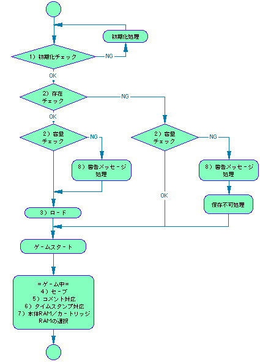
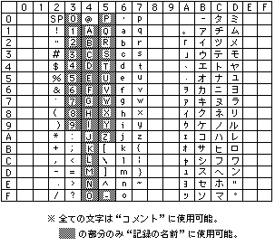

基本的なシステムのフローを図 別冊１-1に示す。このフローの中に示す処理や機能・メッセージについては必ずこれを盛り込まなくてはならない。

※フローはアプリケーションにより異なる場合があります。
メインゲームがスタートする前に必ず本体RAM・カートリッジRAMの初期化のチェックを行う。
もしどちらか一方でも初期化が行われていない場合は、ゲームをスタートさせてはいけない。この場合はユーザーにその旨を伝え、そのアプリケーション内で初期化の作業を直接行うか、もしくはセガサターン本体BOOT ROM内の保存データ管理画面にて初期化の処理を行うようにユーザーに促すこと。
※バックアップRAMをアクセスする際には必ずBACKUPRAM BIOSを使用すること。
※本体RAM・カートリッジRAM・拡張メモリーはSEGASATURN_BACKUP_FORMAT 方式以外でフォーマットしないこと。
メインゲームがスタートする前に自アプリケーションが使用できるデータの存在を確認し、各バックアップRAMの残り容量のチェックを行う。
ここで自分のデータが存在しない、もしくは残り容量が足りない場合は、状況に応じて警告メッセージを表示する。（具体的なメッセージ内容については後述）
データをロードする際には必ずデータ破損のチェックを行う。
もしそのデータが使えない状態である場合はユーザーにその旨を知らせ、使えない状態であることが分かるようにデータを何らかの形で区別して表示しなければならない。
＝＝＝記録についての規定＝＝＝
＜形式について＞
＜名前について＞
例）「パンツァードラグーン」の場合（３ヶ所セーブが必要とする） １ヶ所目：ＰＡＮＺＥＲ＿Ｄ０１ ２ヶ所目：ＰＡＮＺＥＲ＿Ｄ０２ ３ヶ所目：ＰＡＮＺＥＲ＿Ｄ０３ └─┬──┘ └┬┘ │ ３文字のみ変更可 ８文字共通
＜使用量について＞
使用量 ＝（［使用しているバイト数］＋３２）÷６４
コメントは何かしら必ず入れる。最大10文字まで、必ずアスキー文字（半角英・数・カナ、表 別冊１-1参照）を使用すること。
コメントはセーブデータの内容をより詳しく知る為のものであるので、各アプリケーションで有効に活用すること。特に使用用途の見つからない場合はゲーム名（が判別できる情報）をカタカナで入れておくこと。
例）コメントの有効活用例 PANZER_D_01 ： 5メン-ボス （コンティニュー情報） PHANT_ST_01 ： アレフカルドノマチ （セーブした町の名前） SEGARACE_01 ： タイムアタックＭ （モード名） DERBY_ST_01 ： モチカネ６９ （牧場名）
※コメントの内容を、ユーザーが任意に書き換え可能なものとするかは自由。
タイムスタンプは必ず入れるものとし、ユーザーによる書き換えは不可とする。 記録の表示順序は、原則的にこのタイムスタンプの若い順（セーブされた日付の新しい順）とする。
バックアップに対応する全てのアプリケーションは、その記録を必ず本体RAM・カートリッジRAMのどちらにも保存できるようにしなくてはならない。たとえ記録の使用量が大きく本体RAMに収まりきらない場合でも、簡易的な保存方法により本体RAMにも対応することを原則とする。
※極めて些末な記録内容（シューティングゲームのハイスコアのみ等）の場合は除く
※シーケンス上どこでこの選択を行わなければならないかという規定は特にない
※全ての文字は“コメント”に使用可能。 の部分のみ“記録の名前”に使用可能。
